Armas
Las armas son usadas por Warframes, Centinelas y enemigos en combate para causar daño. Las armas pueden ser subidas de nivel para tener una capacidad de mods mayor. Hay tres tipos principales de armas utilizadas por los Warframes: Primarias, Secundarias, y Melé. Los centinelas tienen armas propias que suben de nivel independientemente.
Uso
Las armas en Warframe ganan afinidad (experiencia) al usarlas en combate. Cuando se obtiene suficiente Afinidad, el rango del arma aumenta, hasta un rango máximo de 30. La capacidad de mods de un arma aumenta un punto por rango, esos puntos limitan la combinación de mods que puedes equiparte. Puedes duplicar la capacidad de Mods al usar un catalizador Orokin en el arma y disminuir número de ranuras necesarias para su instalación empleando la correcta polaridad de la ranura de mod.
Subir las armas de nivel otorga 100 puntos de maestría al jugador. Una vez el arma ha sido subida de nivel, no puede comprarse de nuevo para subir más puntos de maestría. Sólo los niveles alcanzados la primera vez añadirán puntos. Sin embargo, las Armas Duales añadirán más puntos, como las Akbolto o las Akbronco, si has dominado sus respectivas armas individuales.
Muchas armas cuerpo a cuerpo tienen "diseños" cosméticos que pueden ser aplicados en el menú de opciones de apariencia. Estos diseños suelen cambiar algunos atributos del arma original.
Las armas tienen ocho ranuras de mod. Instalar y desinstalar mods es gratis. Cuando un mod es desinstalado se recupera la capacidad de mods usada por ese mod específico en esa arma y volverá a estar disponible para usarse con cualquier otra arma.
Los nuevos jugadores empiezan con una MK1-Braton, una Lato, y una Skana como sus armas por defecto.
Atributos
Tipo de Arma
- La función básica cambia con el tipo. Es decir, escopeta vs rifle, o daga vs pistola. Además, el tipo de munición cambia.
Daño Físico
- Cuanto daño hace a la salud y los escudos, usualmente consiste de daño de Impacto de Impacto, Perforación n Perforación y Cortante n Cortante.
Daño Elemental
- Hay diferentes tipos de daño elemental que son más efectivos contra enemigos específcos dependiendo de su naturaleza o equipamiemto. Los tipos de daño elemental básicos son Fuego o incendiario, Hielo o criogénico, Eléctricidad y Tóxico o de toxina. Estos daños elementales básicos pueden también combinarse en otros como Radiactividad, Magnetismo, Corrosión, Explosión , etc.
Puntería
- Con que precisión alcanzará un disparo a su objetivo previsto. Es decir, qué probabilidad hay de que un disparo acierte exactamente en el punto al que estás apuntando.
Velocidad de recarga
- Con qué velocidad recarga el arma
Cargador
- Número de balas por cargador
Carga del ataque
- Con qué rapidez un arma puede ser cargada y el daño que hace a partir de una carga
Crítico
- La probabilidad que un arma tiene de hacer un golpe crítico y el daño que hace con un impacto crítico. Un 1.50 de daño crítico significa que un golpe crítico inflinge una vez y media el daño base del arma.
Estado
- La probabilidad que un arma tiene de causar un estado alterado (proc) dependiendo de los tipos de daño.
Cadencia de fuego
- Con qué rapidez un arma dispara su munición. Las armas automáticas no dejarán de disparar hasta que agoten su cargador mientras se mantenga el gatillo presionado según su ritmo característico o cadecian de fuego. Las armas semi-automáticas sólo disparan una vez cada vez que se apriete el gatillo pero también obedecen a una cierta cadencia y no dispararán infinitamente rápido por que tú lo hagas, ademas se verán muy afectadas por la latencia o el retardo de tu conexión o tu equipo (tu ordenador) y por la velocidad a que esté ejecutándose el juego (fps).
Munición total
- Número total de munición que puede llevar (incluyendo el cargador).
Polaridad
- Si el arma tiene una ranura de Polaridad.
Cónclave
- Cuánto valor tiene un arma en el Cónclave.
Es muy amplia la variedad de armas que podemos encontrar en Warframe, y sus caracteristicas, ahora vermos un recuadro de comparativas de algunas de las armas mas utilizadas en este videojuego:
Al igual que los Warframes existen armas normales y armas Prime como veremos en algunas de las siguientes armas.
| Arma | Tipo | Multiplicador critico | Probabilidad de estado | Rango de maestria requerido |
|---|---|---|---|---|
| 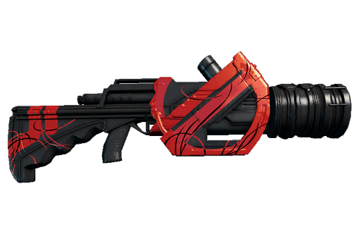Strun Fantasma | Escopeta | 2.0x | 40% | 0 |
| 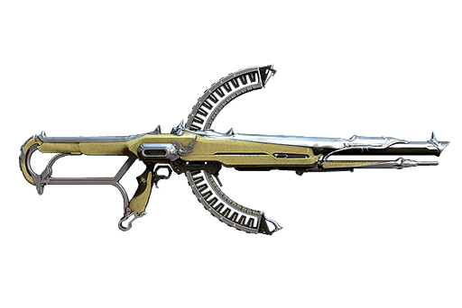 Soma | Rifle Automatico | 3.0x | 7% | 6 |
| 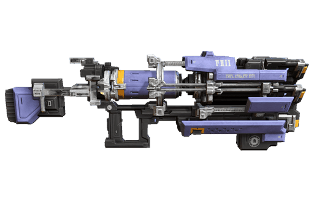 Plasmor Arca | Escopeta | 1.6x | 25% | 10 |
| 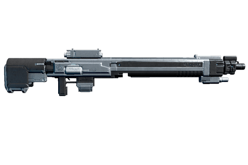 Lanka | Francotirador | 2.0x | 25% | 10 |
| 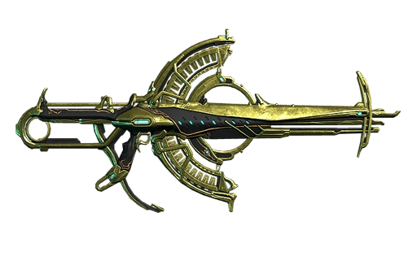 Soma Prime | Rifle semi-automatico | 3.0x | 10% | 7 |
| 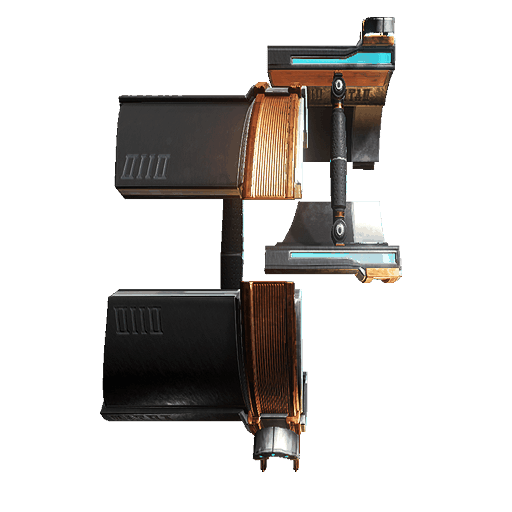 Staticor | Arma secundaria | 2.2x | 28% | 10 |
| 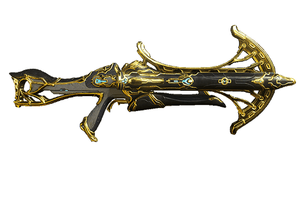 Tigris Prime | Escopeta | 2.0x | 30% | 13 |
| "Armas a distancia" | ||||
Por otro lado también tenemos mucha variedad de armas cuerpo a cuerpo, entre ellas están
| Arma | Tipo | Multiplicador critico | Probabilidad de estado | Rango de maestria requerido |
|---|---|---|---|---|
| 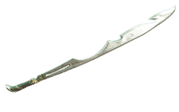Skana Prime | Espada | 1.5x | 10% | 0 |
| 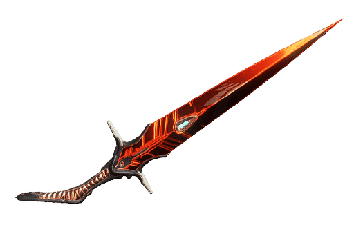 Daga oscura Rakta | Daga | 1.5x | 10% | 0 |
| 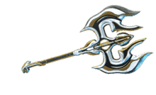 Scindo Prime | Arma Pesada Acha | 2.0x | 15% | 4 |
| 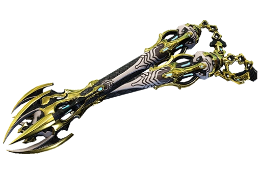 Nikondi Prime | Lanzadas Nunchaku | 2.4x | 36% | 10 |
| "Armas Cuerpo a cuerpo" | ||||